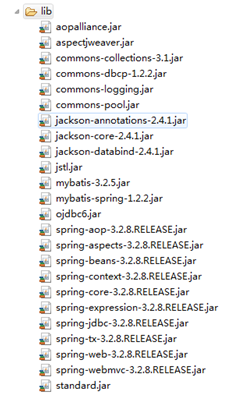
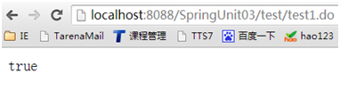
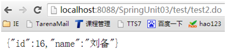
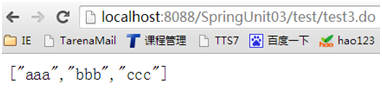
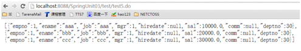

JAVA SPRINGMYBATIS02 UNIT03
1 Spring与Ajax应用案例
1.1 问题
在Spring中使用@ResponseBody注解标注业务方法，将业务方法的返回值做成json输出给页面。
1.2 方案
@ResponseBody注解使用步骤
1.3 步骤
实现此案例需要按照如下步骤进行。
步骤一：导包
复制项目SpringUnit02，创建新项目SpringUnit03，然后在新项目中导入如下的包：
完成之后，项目包结构如下图：

图-1
步骤二：开启@ResponseBody注解
在applicationContext.xml中通过<mvc:annotation-driven />开启@ResponseBody注解，由于在配置Spring MVC时已经增加了这段配置，因此这个步骤可以省略了。
步骤三：使用@ResponseBody标注业务方法
创建业务控制器JsonController，用于演示@ResponseBody的多种用法，该注解可以将如下类型的数据做成json：
JsonController代码如下：
- package com.tarena.controller;
- import java.util.ArrayList;
- import java.util.HashMap;
- import java.util.List;
- import java.util.Map;
- import org.springframework.stereotype.Controller;
- import org.springframework.web.bind.annotation.RequestMapping;
- import org.springframework.web.bind.annotation.ResponseBody;
- import com.tarena.entity.Emp;
- @Controller
- @RequestMapping("/test")
- public class JsonController {
- @RequestMapping("/test1.do")
- @ResponseBody
- public boolean test1() {
- return true;
- }
- @RequestMapping("/test2.do")
- @ResponseBody
- public Map<String,Object> test2() {
- Map<String,Object> map = new HashMap<String, Object>();
- map.put("id", 16);
- map.put("name", "刘备");
- return map;
- }
- @RequestMapping("/test3.do")
- @ResponseBody
- public List<String> test3() {
- List<String> list = new ArrayList<String>();
- list.add("aaa");
- list.add("bbb");
- list.add("ccc");
- return list;
- }
- @RequestMapping("/test4.do")
- @ResponseBody
- public Emp test4() {
- Emp e = new Emp();
- e.setEmpno(1);
- e.setEname("刘苍松");
- e.setJob("老师");
- e.setMgr(1);
- e.setSal(10000.0);
- e.setDeptno(30);
- return e;
- }
- @RequestMapping("/test5.do")
- @ResponseBody
- public List<Emp> test5() {
- List<Emp> list = new ArrayList<Emp>();
- Emp e1 = new Emp();
- e1.setEmpno(1);
- e1.setEname("aaa");
- e1.setJob("aaa");
- e1.setMgr(1);
- e1.setSal(10000.0);
- e1.setDeptno(30);
- list.add(e1);
- Emp e2 = new Emp();
- e2.setEmpno(1);
- e2.setEname("bbb");
- e2.setJob("bbb");
- e2.setMgr(1);
- e2.setSal(20000.0);
- e2.setDeptno(30);
- list.add(e2);
- Emp e3 = new Emp();
- e3.setEmpno(1);
- e3.setEname("ccc");
- e3.setJob("ccc");
- e3.setMgr(1);
- e3.setSal(30000.0);
- e3.setDeptno(30);
- list.add(e3);
- return list;
- }
- }
步骤四：测试
部署项目并启动tomcat，打开浏览器，依次访问JsonController中的业务方法，效果如下图：
访问test1.do效果如下图：

图-2
访问test2.do效果如下图：

图-3
访问test3.do效果如下图：

图-4
访问test4.do效果如下图：

图-5
访问test5.do效果如下图：

图-6
1.4 完整代码
本案例的完整代码如下所示：
JsonController完整代码如下：